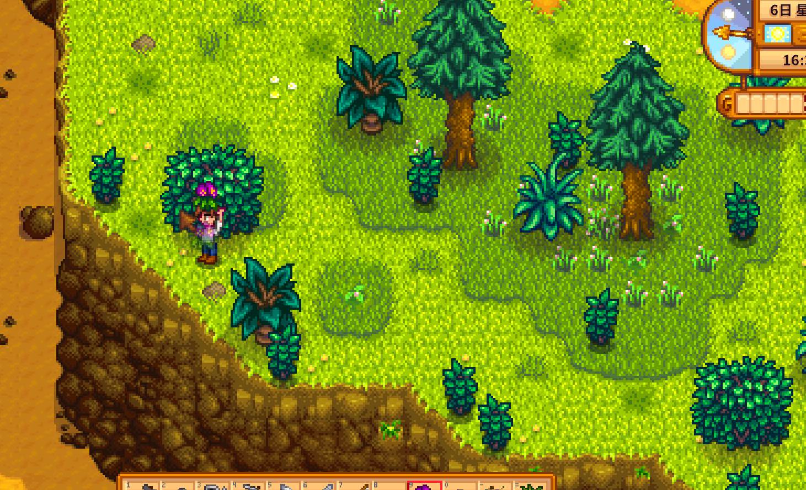

Quick answers (read this first)
- Spring forage spawns on the ground outdoors—click to pick up (looks bigger than decoration flowers).
- Best early loop: farm → south forest → optional town edges.
- Keep a few for Community Center forage slots; eat some when energy dips.
- Salmonberry season is Spring 15–18—shake town and forest bushes for free snacks.
- Do not skip watering to “perfect forage” the whole map.
Who this is for
Use this if you cannot tell forage from weeds, or you sell everything then starve underground. Many new players click every flower on the farm and wonder why nothing picks up—decorative petals are scenery, while forage items look like distinct clumps you can grab.
Version note: Stardew Valley 1.6 keeps seasonal forage lists with broader quality-of-life elsewhere. Spring items vanish when Summer starts, so bundle pieces you hoard in a chest still matter only if you turn them in before the season rolls.
Pros & cons
| Details | |
|---|---|
| Pros | Free food, free gold, bundle progress, gentle exploration of Cindersap Forest and town edges. |
| Cons | Spawn randomness; easy to burn the whole morning; inventory fills fast; scenery clicks waste time. |
| Use when | After chores, especially while walking to town anyway. |
| Skip when | Exhausted, festival window closing, or crops missed water yesterday. |
What counts as Spring forage
Spring ground forage includes wild horseradish, daffodil, leek, and dandelion—they appear on outdoor tiles across the farm, forest, town, and mountain depending on the day. Mid-Spring also brings salmonberry bushes you shake or pick when the season allows.
Forage is not the same as cultivated crops or museum artifacts. If a click does nothing, it is probably decoration. If it pops into your inventory, decide: eat for energy, ship for gold, or chest for bundles.
Interactive checklist
Safe to skip (anti-FOMO)
- Combing every bush on the mountain every single day.
- Buying forage from the Traveling Cart in week one.
- Hoarding dozens of leeks while fainting with an empty stomach.
- Skipping watering to chase a perfect forage route across the entire map.
Decision table
| Find | Usually | Notes |
|---|---|---|
| Wild horseradish / leek / daffodil / dandelion | Pick | Eat, ship, or bundle-chest |
| Decoration petal flowers that do nothing | Ignore | If click fails, it is scenery |
| First odd artifact | Chest → museum | Not forage food |
Route priority table
| Route segment | Effort | Year 1 value |
|---|---|---|
| Farm edges after watering | Low | Free picks on the way to shipping bin |
| South Cindersap Forest | Medium | Best early density; passes Marnie’s landmark |
| Town edges on errand days | Low | Combine with Pierre or community center trips |
| Full mountain sweep daily | High | Skip unless you are already mining north |
Sort-on-pickup table
| Inventory situation | Do with forage | Why |
|---|---|---|
| Energy below half | Eat one item | Cheaper than fainting in the mines |
| First of a Spring species | Chest for bundles | Community Center may ask later |
| Duplicates and full energy | Ship overnight | Gold funds seeds and tools |
| Bag nearly full | Ship or eat before deeper route | Empty slots pick up new spawns |
Real screenshots

Game screenshot © ConcernedApe — used for guide commentary

Game screenshot © ConcernedApe — used for guide commentary

Game screenshot © ConcernedApe — used for guide commentary
Operations
Eight steps for a Spring forage loop that supports your farm instead of replacing it.
- Water crops first on sunny days. Foraging is a bonus pass, not a substitute for the morning chore that pays consistent bills.
- Leave three to five empty inventory slots. Full bags mean walking past spawns you cannot pick up.
- Walk south into Cindersap Forest. Grab visible ground plants along the path; do not feel obliged to clear every tile.
- Shake salmonberry bushes when the season allows. Mid-Spring bush berries are great emergency snacks—eat some, ship extras.
- Sort immediately: eat, chest, or carry to ship. Right-click edible items when energy dips; stash first-of-kind items in a labeled chest.
- Continue to town only if energy and time allow. Combine foraging with errands you already planned.
- Check Community Center bulletin board when you unlock it. Adjust chest priorities if a bundle needs a specific Spring item you sold.
- Stop when the route stops being fun or hits Exhausted. Tomorrow spawns more forage; crops still need daily care.
Alternative variations
The minimal forager
Some players only pick items they literally walk past on the way to Pierre’s. No dedicated forest loops—just grab, ship, and go. That still levels foraging slowly and avoids losing mornings to bush hunting.
The bundle-focused forager
Others treat Spring as a gentle collection season. They chest one of each forage type early, then shift to eating and shipping duplicates. Pair this with occasional community center visits so hoarding matches actual bundle needs.
Common mistakes
- Clicking scenery flowers forever. If nothing enters your inventory, move on—it is not hidden loot.
- Selling every Spring forage before checking bundles. One chest slot per species prevents late-season panic buys from the cart.
- Full inventory so nothing picks up. Many new players finish a forest loop with zero gains because the bag was full of stone and sap.
- Skipping watering to “perfect forage” the map. Crops are reliable income; forage is opportunistic. Order matters.
- Hoarding food while fainting in the mines. Leeks and dandelions are emergency rations. Eat on the spot when the energy bar dips.
FAQ
Where do Spring forage items appear?
Outdoor ground tiles across the valley—farm edges, Cindersap Forest, town paths, and mountain areas. New items spawn daily within the season’s rules.
Can I forage the same items in Summer?
No. Seasons rotate forage lists. Gather Spring pieces before Day 28 ends if bundles or cooking need them.
Are salmonberries worth picking?
Yes for early energy and foraging practice. They are not a replacement for crops, but bush days are good free snack runs.
Does foraging level matter in Year 1?
Higher foraging unlocks better chopping and profession choices later. Picking Spring plants still grants experience even when you eat the item.
Should I eat or ship wild horseradish?
Early Spring: eat if hungry, ship if energy is fine, chest if it is your first copy and you care about bundles. Context beats a rigid rule.
Related
Unofficial fan guide. Not affiliated with ConcernedApe or the original developers of Stardew Valley.